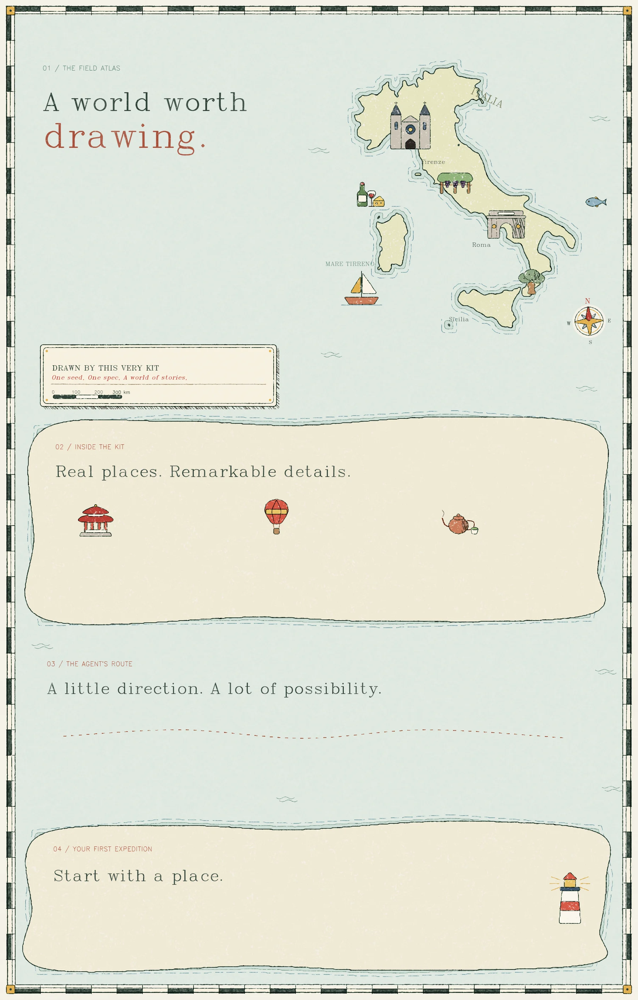

Grounded in geography
Countries, provinces, rivers, lakes, cities and peaks from bundled Natural Earth data. Start with a name, not a guess.

Turn a place into a story.
An agent-driven engine for hand-drawn
illustrated cultural maps.
Real geography. Pencil, ink & watercolor.
Made with Node.js. Directed by you.
Countries, provinces, rivers, lakes, cities and peaks from bundled Natural Earth data. Start with a name, not a guess.
65 built-in illustrations, plus custom inline SVG. Landmarks, wildlife and food, rendered through the same dry-media engine.
Vintage Atlas, Blueprint, Nocturne and Ink Wash. Bilingual and curved labels. Latin, Han, Kana and Hangul, plus your own fonts.
A declarative spec. A visible result. A feedback loop your agent can read.
Discover real places
and built-in assets.
inspect … --jsonCompose a map
in YAML or JSON.
schemaVersion: 1See a fast preview
with auto-layout.
--fast --auto-layoutRead overlaps and
bounds as JSON.
--diagnosticsFix the spec. Repeat.
Then render in HD.
--hdAlready in this site’s project folder?./build.sh regenerates everything you see.
For a first map, use the bundled Italy spec:
Download this page’s YAML ↓Portrait spec ↓# Inspect, then render
cd kit
npx handdrawn-map inspect elements --json
npx handdrawn-map render examples/specs/italy.yaml \
-o out/italy.png --fast --auto-layout \
--diagnostics out/italy.diag.jsonBring it to another project: npm install github:wangreng/handdrawn-map-kit